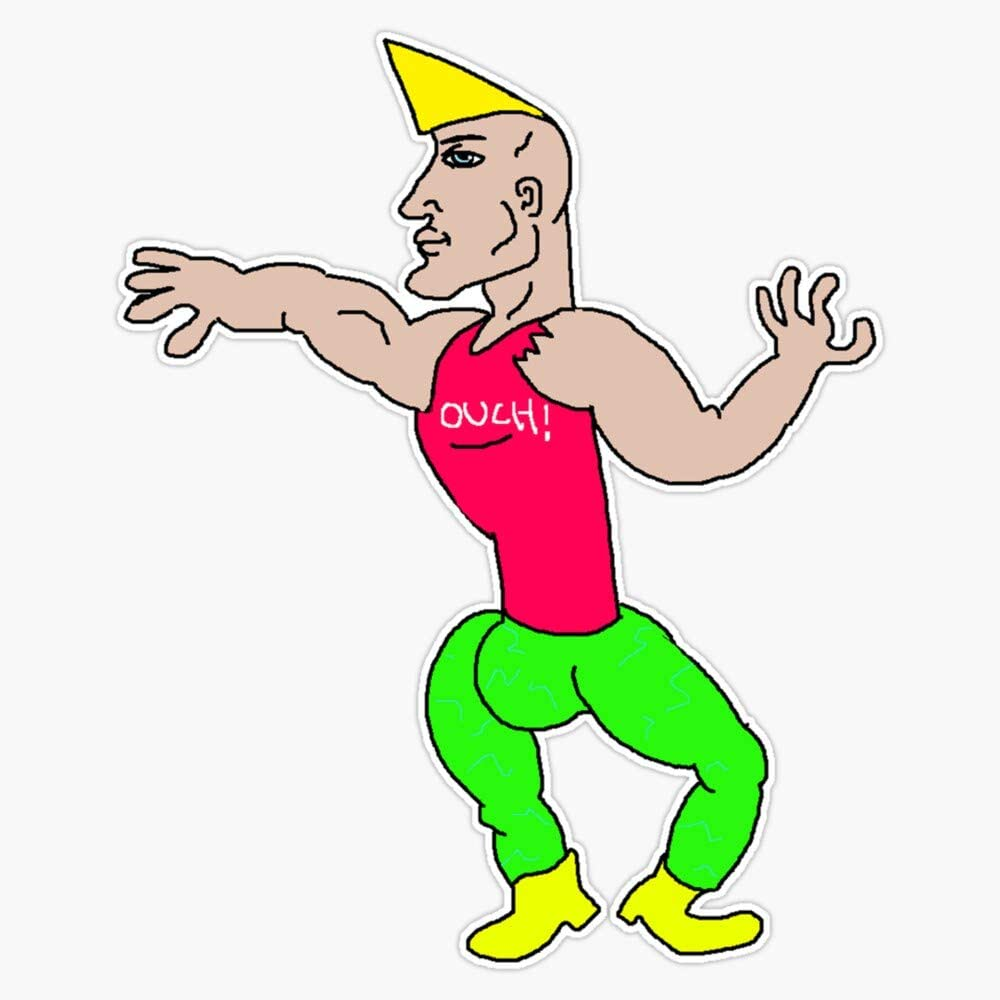

Chad
O que é um Chad?
Na cultura popular, "Chad" é um estereótipo de um homem atraente, confiante e atlético, geralmente associado à cultura das fraternidades universitárias nos Estados Unidos.
Em alguns fóruns da internet, "Chad" é usado de forma pejorativa para se referir a homens atraentes e populares que supostamente têm muitas oportunidades sexuais e são desprezados pelos homens menos atraentes e menos populares.
Tipos de Chad
Na Internet, podemos encontrar 3 tipos de Chad:
Chad Thundercock
"Chad Thundercock" é um termo pejorativo e misógino usado em algumas comunidades online, como o Reddit e o 4chan, para descrever um homem imaginário e estereotipado que supostamente possui características consideradas altamente desejáveis pelos padrões culturais ocidentais, como músculos definidos, altura elevada, traços faciais simétricos, voz profunda, confiança e habilidades sociais, financeiras e sexuais excepcionais.
O termo é frequentemente usado de forma sarcástica para ridicularizar os homens que se encaixam nesse estereótipo ou para descrever um homem que é percebido como "superior" em relação a outros homens. No entanto, o uso desse termo geralmente reflete atitudes negativas em relação a mulheres e pessoas que não se encaixam nos padrões culturais dominantes de beleza e sucesso.
É importante lembrar que essa noção de "homem ideal" é uma construção social e cultural, que pode ser prejudicial tanto para homens quanto para mulheres, perpetuando estereótipos de gênero, desigualdade e discriminação.
Yes Chad

O meme "Yes Chad" apresenta um personagem masculino musculoso e com barba, que parece estar confiante e satisfeito com sua vida. A imagem geralmente é acompanhada de uma legenda positiva ou de um texto que sugere que a pessoa que se identifica com o meme está se sentindo bem-sucedida ou confiante em alguma situação.
Antes de continuar, Clique no play do audio abaixo
Giga Chad

Giga Chad" é um termo ainda mais exagerado usado em algumas comunidades online para descrever um homem imaginário que é visto como o ápice do estereótipo "Chad Thundercock" , mencionado anteriormente. O termo "Giga" é adicionado para indicar um nível ainda maior de superioridade em relação ao estereótipo original.
O "Giga Chad" é retratado como um homem muito alto, musculoso, com traços faciais perfeitos, olhos claros e cabelo perfeito, além de ter habilidades sociais, financeiras e sexuais excepcionais. Em geral, ele é considerado o exemplo máximo de masculinidade, força e virilidade.